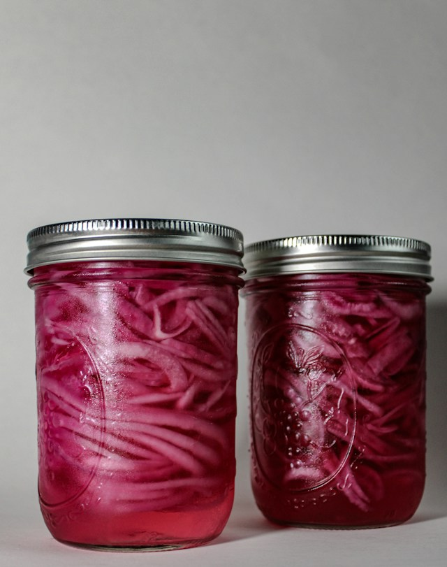

Home
Pickled Onions

Description
Pickled onions are a must have in your kitchen. The cool crisp crunch of a sweet and tangy red onion after
marinating in an easy to assemble brine is unmatched. Whether you are enjoying them by themselves or as an
ingredient in other recipes, here is how you make them.
Ingredients
- 1 Red Onion
- 1 tsp Kosher Salt
- 3/4 Tbsp Sugar
- 1/2 tsp Oregano
- 1 Bay Leaf
- 1/2 Cup Apple Cider Vinegar
- 1 1/2 Cup Water
Steps
- Remove onion's tunic and cut in half towards the root.
- Place each half with their inside faced into the cutting board and cut small portion from
both ends to remove the root and nose.
- From the ends that would have the stem and nose, slice the onion into shoestring fry width.
- Place the cut onions into a mason jar along with the bay leaf and place to the side.
- Place remaining ingredients into a pot and bring the contents to a simmer. Do not boil.
- Keep simmering for roughly 30 seconds.
- Pour the contents of the pot into the mason jar containing the onions.
- Close mason jar and for 1 min, occasionally flip so mixture spreads out evenly.
- Leave mason jar out and let cool to near room temp.
- Store mason jar in refrigerator and let onions rest over night.
- Enjoy!